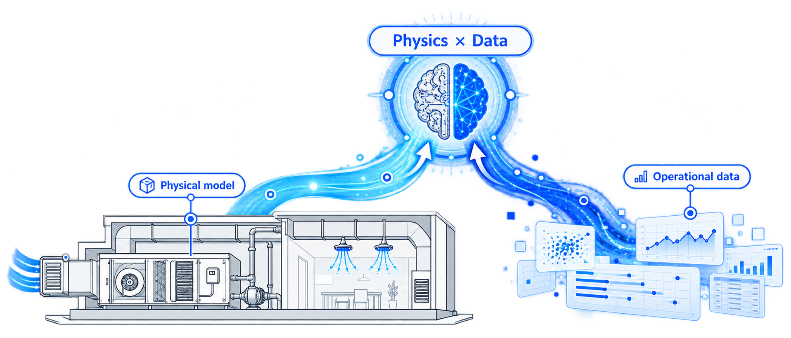
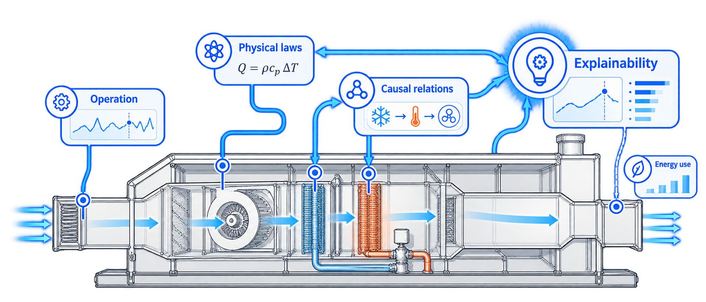
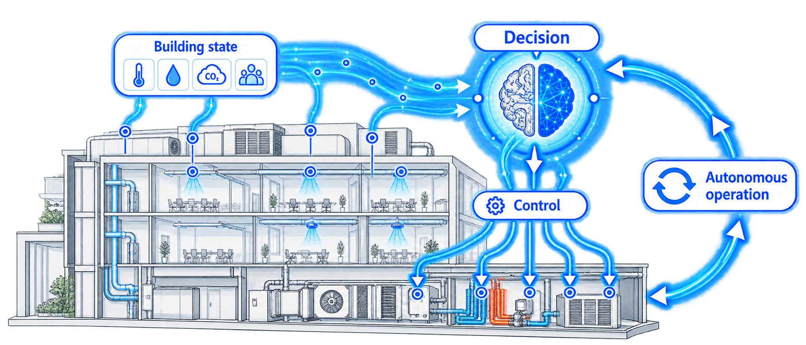
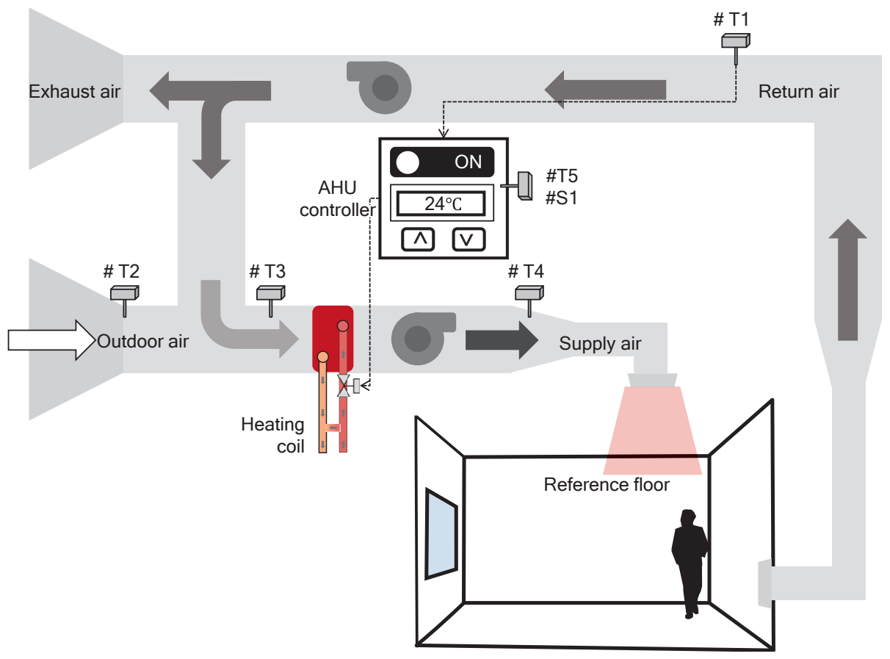

VISION 01 · PHYSICS × DATA
Integrating physics and data

Combining physics-based models with operational data extends prediction beyond the observed operating range.
건축설비 자율화 연구실
Building autonomy, guided by physics.
We combine physics-based models with operational data to study the autonomous operation of building systems.Through measurement, diagnosis, and optimal control, we pursue energy efficiency and intelligent building operation.

Building systems that assess operating conditions and control themselves
Heating, cooling, air-conditioning, and energy systems in buildings
Performance prediction grounded in physical relationships, even with limited data
We study sustainable autonomous operation
that accounts for both equipment condition and building demand.

VISION 01 · PHYSICS × DATA

Combining physics-based models with operational data extends prediction beyond the observed operating range.
VISION 02 · PHYSICS → EXPLAINABILITY

Operating and energy-use characteristics of building systems are interpreted through physical laws and causal relationships.
VISION 03 · INTELLIGENCE → AUTONOMY

Autonomous control assesses the building's state, then determines and executes the optimal operating strategy.



We are recruiting graduate students and undergraduate researchers.
juhongoh@pknu.ac.kr